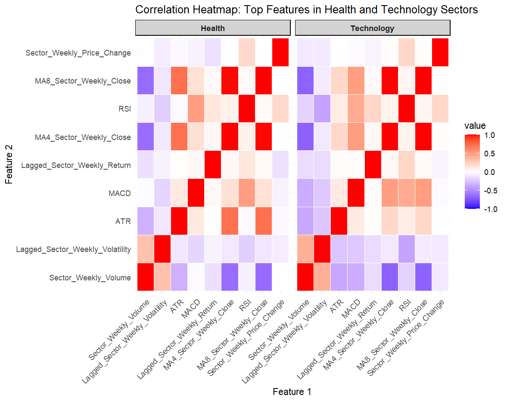
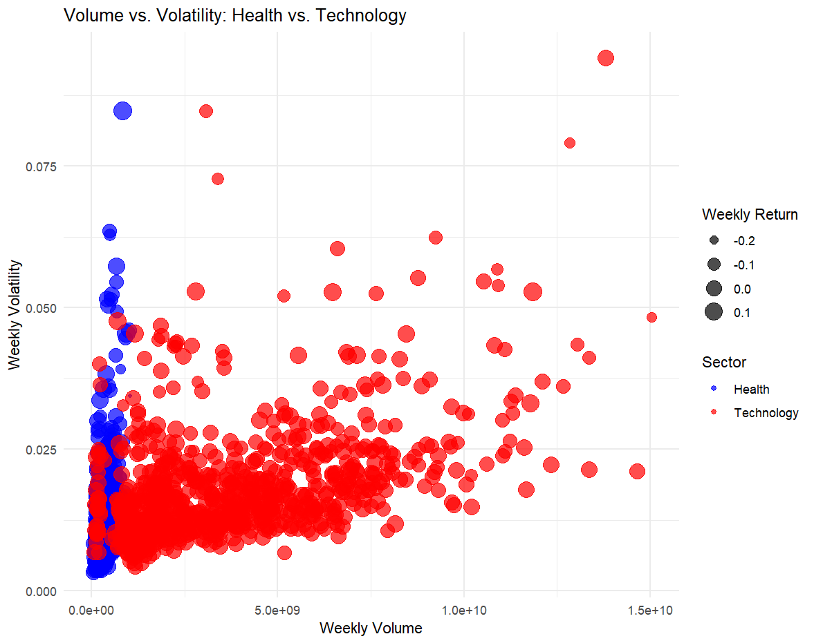
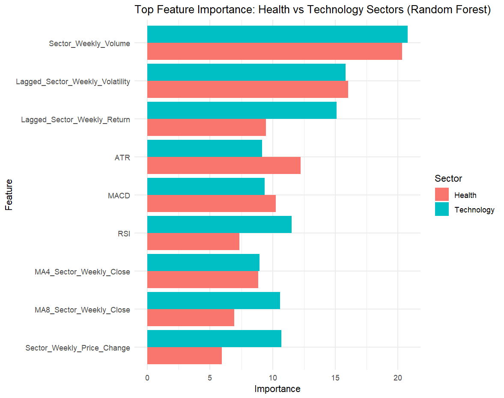

Introduction
Stock price volatility, a critical measure of market risk, impacts investor decisions and market dynamics. This study explores the relationship between weekly stock price volatility and technical indicators like ATR, RSI, and MACD in the Health and Technology sectors. These sectors offer a contrast: Health is defensive and stable, while Technology is speculative and innovation-driven, enabling sector-specific insights. The research also evaluates predictive models’ effectiveness in identifying and forecasting drivers of volatility, addressing gaps in dynamic market predictions.
Research Question
What are the key patterns and relationships between weekly stock price volatility and technical indicators (e.g., RSI, MACD, ATR) in the Health and Technology sectors, and how effectively can predictive models identify and forecast the drivers of this volatility?
Composite Visualization
-
Correlation Heatmap
 -
Volume vs. Volatility Scatter Plot
 -
Feature Importance Chart
 -
Actual vs. Predicted Volatility Chart

Key Messages
- Weekly trading volume and lagged volatility are the strongest predictors of stock price volatility.
- The Technology sector shows higher volatility driven by speculative trading, unlike the stable Health sector.
- Random Forest model perform well in stable conditions but struggle with extreme volatility spikes.
R Code
Access the R scripts here.
###########################################################
# Libraries
###########################################################
# Install necessary libraries if not already installed
if (!requireNamespace("iml", quietly = TRUE)) install.packages("iml")
if (!requireNamespace("caret", quietly = TRUE)) install.packages("caret")
if (!requireNamespace("randomForest", quietly = TRUE)) install.packages("randomForest")
if (!requireNamespace("xgboost", quietly = TRUE)) install.packages("xgboost")
if (!requireNamespace("ggplot2", quietly = TRUE)) install.packages("ggplot2")
if (!requireNamespace("reshape2", quietly = TRUE)) install.packages("reshape2")
if (!requireNamespace("plotly", quietly = TRUE)) install.packages("plotly")
if (!requireNamespace("dplyr", quietly = TRUE)) install.packages("dplyr")
if (!requireNamespace("lubridate", quietly = TRUE)) install.packages("lubridate")
if (!requireNamespace("zoo", quietly = TRUE)) install.packages("zoo")
if (!requireNamespace("GGally", quietly = TRUE)) install.packages("GGally")
# Load required libraries
library(iml)
library(caret)
library(randomForest)
library(xgboost)
library(ggplot2)
library(reshape2)
library(plotly)
library(dplyr)
library(lubridate)
library(zoo)
library(GGally)
###########################################################
# Data Loading
###########################################################
# Set main project directory (adjust this path as needed)
setwd("C:/Users/tahao/OneDrive/Documents/MSc Data Science/Introduction to Data Science(INF6027)/Coursework/Coursework R")
# Function to load all CSV files from a folder into a named list
load_data <- function(folder_path) {
# Get all CSV file paths in the folder
files <- list.files(folder_path, pattern = "\\.csv$", full.names = TRUE)
# Load each CSV file and store it in a named list
data_list <- lapply(files, read.csv)
names(data_list) <- sub("\\.csv$", "", basename(files)) # Remove .csv extension for naming
return(data_list)
}
# Load health and technology sector datasets into separate lists
health_data <- load_data("Health")
technology_data <- load_data("Technology")
# Check structure of a specific dataset, e.g., ABBV in health sector
str(health_data$ABBV)
# Check names of datasets loaded in each sector
names(health_data)
names(technology_data)
# Function to detect and handle missing values
clean_data <- function(data) {
# Check for missing values
missing_summary <- sapply(data, function(x) sum(is.na(x)))
print("Summary of missing values:")
print(missing_summary)
# Decide on handling method based on percentage of missing values
missing_percent <- missing_summary / nrow(data) * 100
print("Percentage of missing values:")
print(missing_percent)
# Example handling:
# If a column has < 5% missing values, fill with median (numeric) or mode (categorical)
# If > 5% and < 20%, consider filling or removing based on data context
# If > 20%, consider removing the column or imputing with a more advanced method
for (col in names(data)) {
if (missing_percent[col] < 5) {
# Numeric: Fill with median
if (is.numeric(data[[col]])) {
data[[col]][is.na(data[[col]])] <- median(data[[col]], na.rm = TRUE)
}
# Factor or character: Fill with mode
else if (is.factor(data[[col]]) || is.character(data[[col]])) {
mode_value <- as.character(names(sort(table(data[[col]]), decreasing = TRUE)[1]))
data[[col]][is.na(data[[col]])] <- mode_value
}
} else if (missing_percent[col] >= 5 && missing_percent[col] < 20) {
# Fill based on context, could use mean, median, or KNN imputation (for example)
data[[col]] <- zoo::na.approx(data[[col]], na.rm = FALSE) # Linear interpolation for numeric
} else {
# High missingness: consider removing column
data[[col]] <- NULL
}
}
return(data)
}
# Apply the cleaning function to all datasets
health_data <- lapply(health_data, clean_data)
technology_data <- lapply(technology_data, clean_data)
###########################################################
# Data Preprocessing
###########################################################
calculate_daily_returns <- function(data) {
data$Daily_Return <- c(NA, diff(log(data$Adjusted.Close)))
return(data)
}
# Apply to each dataset
health_data <- lapply(health_data, calculate_daily_returns)
technology_data <- lapply(technology_data, calculate_daily_returns)
# Function to filter data from 2010 onwards
filter_date_range <- function(data, start_date = "2005-01-01") {
data <- data %>% filter(as.Date(Date, format = "%d-%m-%Y") >= as.Date(start_date))
return(data)
}
# Apply the filter function to all datasets
filtered_health_data <- lapply(health_data, filter_date_range)
filtered_technology_data <- lapply(technology_data, filter_date_range)
# Function to calculate VWAP for each week
aggregate_to_weekly_with_vwap <- function(data) {
data <- data %>%
mutate(Week = floor_date(as.Date(Date, format = "%d-%m-%Y"), "week")) %>%
group_by(Week) %>%
summarize(
Weekly_Volume = sum(Volume, na.rm = TRUE),
Weekly_High = max(High, na.rm = TRUE),
Weekly_Low = min(Low, na.rm = TRUE),
Weekly_Close = last(Adjusted.Close),
Weekly_Return = sum(Daily_Return, na.rm = TRUE),
Weekly_Volatility = sd(Daily_Return, na.rm = TRUE),
VWAP = sum(Volume * Adjusted.Close, na.rm = TRUE) / sum(Volume, na.rm = TRUE)
)
return(data)
}
# Apply to filtered datasets
health_data_weekly <- lapply(filtered_health_data, aggregate_to_weekly_with_vwap)
technology_data_weekly <- lapply(filtered_technology_data, aggregate_to_weekly_with_vwap)
###########################################################
# Data Aggregation & Feature Engineering
###########################################################
# Enhanced aggregation function
aggregate_sector_data <- function(data_list, weights = NULL) {
# Helper function to detect and remove outliers using IQR
remove_outliers <- function(data, column) {
Q1 <- quantile(data[[column]], 0.25, na.rm = TRUE)
Q3 <- quantile(data[[column]], 0.75, na.rm = TRUE)
IQR <- Q3 - Q1
lower_bound <- Q1 - 1.5 * IQR
upper_bound <- Q3 + 1.5 * IQR
data <- data %>% filter(data[[column]] >= lower_bound & data[[column]] <= upper_bound)
return(data)
}
# Bind all individual datasets into one
combined_data <- do.call(rbind, data_list)
# Handle outliers in Weekly_High and Weekly_Low
combined_data <- remove_outliers(combined_data, "Weekly_High")
combined_data <- remove_outliers(combined_data, "Weekly_Low")
# Aggregate metrics
aggregated_data <- combined_data %>%
group_by(Week) %>%
summarize(
Sector_Weekly_Volume = sum(Weekly_Volume, na.rm = TRUE),
Sector_Weekly_High = max(Weekly_High, na.rm = TRUE),
Sector_Weekly_Low = min(Weekly_Low, na.rm = TRUE),
# Weighted averages
Sector_Weekly_Close = if (!is.null(weights)) {
sum(Weekly_Close * weights, na.rm = TRUE) / sum(weights, na.rm = TRUE)
} else {
mean(Weekly_Close, na.rm = TRUE)
},
Sector_Weekly_Return = if (!is.null(weights)) {
sum(Weekly_Return * weights, na.rm = TRUE) / sum(weights, na.rm = TRUE)
} else {
mean(Weekly_Return, na.rm = TRUE)
},
Sector_Weekly_Volatility = mean(Weekly_Volatility, na.rm = TRUE),
# Volume-weighted average price (VWAP)
Sector_VWAP = sum(Weekly_Volume * Weekly_Close, na.rm = TRUE) / sum(Weekly_Volume, na.rm = TRUE)
)
return(aggregated_data)
}
# Apply the enhanced aggregation function to health and technology data
aggregated_health_data <- aggregate_sector_data(health_data_weekly)
aggregated_technology_data <- aggregate_sector_data(technology_data_weekly)
add_lagged_variables <- function(data, lag = 1) {
data <- data %>%
mutate(
Lagged_Sector_Weekly_Return = lag(Sector_Weekly_Return, n = lag),
Lagged_Sector_Weekly_Volatility = lag(Sector_Weekly_Volatility, n = lag)
)
return(data)
}
# Apply lagged variables
aggregated_health_data <- add_lagged_variables(aggregated_health_data)
aggregated_technology_data <- add_lagged_variables(aggregated_technology_data)
add_moving_averages <- function(data) {
data <- data %>%
mutate(
MA4_Sector_Weekly_Volume = rollmean(Sector_Weekly_Volume, k = 4, fill = NA, align = "right"),
MA8_Sector_Weekly_Volume = rollmean(Sector_Weekly_Volume, k = 8, fill = NA, align = "right"),
MA4_Sector_Weekly_Close = rollmean(Sector_Weekly_Close, k = 4, fill = NA, align = "right"),
MA8_Sector_Weekly_Close = rollmean(Sector_Weekly_Close, k = 8, fill = NA, align = "right")
)
return(data)
}
# Apply moving averages
aggregated_health_data <- add_moving_averages(aggregated_health_data)
aggregated_technology_data <- add_moving_averages(aggregated_technology_data)
add_weekly_price_change <- function(data) {
data <- data %>%
mutate(
Sector_Weekly_Price_Change = (Sector_Weekly_Close - lag(Sector_Weekly_Close)) / lag(Sector_Weekly_Close) * 100
)
return(data)
}
# Apply weekly price change calculation
aggregated_health_data <- add_weekly_price_change(aggregated_health_data)
aggregated_technology_data <- add_weekly_price_change(aggregated_technology_data)
add_rsi <- function(data, n = 14) {
data <- data %>%
mutate(
Change = Sector_Weekly_Close - lag(Sector_Weekly_Close),
Gain = ifelse(Change > 0, Change, 0),
Loss = ifelse(Change < 0, abs(Change), 0),
Avg_Gain = rollmean(Gain, k = n, fill = NA, align = "right"),
Avg_Loss = rollmean(Loss, k = n, fill = NA, align = "right"),
RS = Avg_Gain / Avg_Loss,
RSI = 100 - (100 / (1 + RS))
)
return(data)
}
# Apply RSI
aggregated_health_data <- add_rsi(aggregated_health_data)
aggregated_technology_data <- add_rsi(aggregated_technology_data)
add_macd <- function(data, short = 12, long = 26, signal = 9) {
data <- data %>%
mutate(
EMA_Short = rollmean(Sector_Weekly_Close, k = short, fill = NA, align = "right"),
EMA_Long = rollmean(Sector_Weekly_Close, k = long, fill = NA, align = "right"),
MACD = EMA_Short - EMA_Long,
Signal_Line = rollmean(MACD, k = signal, fill = NA, align = "right")
)
return(data)
}
# Apply MACD
aggregated_health_data <- add_macd(aggregated_health_data)
aggregated_technology_data <- add_macd(aggregated_technology_data)
add_atr <- function(data, n = 14) {
data <- data %>%
mutate(
TR = pmax(Sector_Weekly_High - Sector_Weekly_Low,
abs(Sector_Weekly_High - lag(Sector_Weekly_Close)),
abs(Sector_Weekly_Low - lag(Sector_Weekly_Close))),
ATR = rollmean(TR, k = n, fill = NA, align = "right")
)
return(data)
}
# Apply ATR
aggregated_health_data <- add_atr(aggregated_health_data)
aggregated_technology_data <- add_atr(aggregated_technology_data)
add_bollinger_bands <- function(data, n = 20) {
data <- data %>%
mutate(
MA_Close = rollmean(Sector_Weekly_Close, k = n, fill = NA, align = "right"),
Std_Dev = rollapply(Sector_Weekly_Close, width = n, FUN = sd, fill = NA, align = "right"),
Upper_Band = MA_Close + (2 * Std_Dev),
Lower_Band = MA_Close - (2 * Std_Dev)
)
return(data)
}
# Apply Bollinger Bands
aggregated_health_data <- add_bollinger_bands(aggregated_health_data)
aggregated_technology_data <- add_bollinger_bands(aggregated_technology_data)
###########################################################
# Exploratory Data Analysis
###########################################################
# Combine data for easy comparison
combined_data <- aggregated_health_data %>%
mutate(Sector = "Health") %>%
bind_rows(aggregated_technology_data %>% mutate(Sector = "Technology"))
# Scatter plot: Weekly Volume vs. Volatility
ggplot(combined_data, aes(x = Sector_Weekly_Volume, y = Sector_Weekly_Volatility, color = Sector)) +
geom_point(alpha = 0.6) +
facet_wrap(~ Sector, scales = "free_x") +
labs(
title = "Volume vs. Volatility (Health vs. Technology Sectors)",
x = "Weekly Volume",
y = "Weekly Volatility"
) +
scale_color_manual(values = c("Health" = "blue", "Technology" = "red")) +
theme_minimal()
# Time-series plot of Weekly Returns
ggplot() +
geom_line(data = aggregated_health_data,
aes(x = Week, y = Sector_Weekly_Return, color = "Health"), size = 1) +
geom_line(data = aggregated_technology_data,
aes(x = Week, y = Sector_Weekly_Return, color = "Technology"), size = 1) +
labs(
title = "Weekly Returns: Health vs. Technology",
x = "Week",
y = "Average Weekly Return"
) +
scale_color_manual(name = "Sector", values = c("Health" = "blue", "Technology" = "red")) +
theme_minimal()
# Histogram comparing distribution of weekly returns for Health vs Tech
ggplot(combined_data, aes(x = Sector_Weekly_Return, fill = Sector)) +
geom_histogram(alpha = 0.6, bins = 30, position = "identity") +
labs(
title = "Histogram of Weekly Returns by Sector",
x = "Weekly Return",
y = "Count"
) +
scale_fill_manual(values = c("Health" = "blue", "Technology" = "red")) +
theme_minimal()
# Select numeric features of interest for Health
health_numeric <- aggregated_health_data %>%
select(Sector_Weekly_Volume, Sector_Weekly_Return, Sector_Weekly_Volatility)
# Pair plot for Health
ggpairs(
health_numeric,
title = "Pair Plot: Key Variables in Health Sector",
upper = list(continuous = wrap("cor", size = 3)),
lower = list(continuous = wrap("smooth", alpha = 0.5))
)
# Select numeric features of interest for Technology
tech_numeric <- aggregated_technology_data %>%
select(Sector_Weekly_Volume, Sector_Weekly_Return, Sector_Weekly_Volatility)
# Pair plot for Technology
ggpairs(
tech_numeric,
title = "Pair Plot: Key Variables in Technology Sector",
upper = list(continuous = wrap("cor", size = 3)),
lower = list(continuous = wrap("smooth", alpha = 0.5))
)
bubble_plot <- ggplot(combined_data,
aes(x = Sector_Weekly_Volume, y = Sector_VWAP,
size = Sector_Weekly_Return, color = Sector)) +
geom_point(alpha = 0.5) +
facet_wrap(~ Sector, scales = "free") +
labs(
title = "Volume vs. VWAP Bubble Plot: Health vs. Technology",
x = "Weekly Volume",
y = "VWAP",
size = "Weekly Return"
) +
scale_color_manual(values = c("Health" = "blue", "Technology" = "red")) +
theme_minimal()
ggplotly(bubble_plot)
# 4.1 - Health Sector Correlation Heatmap
health_numeric <- aggregated_health_data %>%
select(
Sector_Weekly_Volume, Sector_Weekly_Close, Sector_Weekly_Return,
Sector_Weekly_Volatility, Sector_Weekly_Price_Change, RSI, MACD, ATR
)
# Compute correlation matrix
corr_health <- cor(health_numeric, use = "complete.obs")
# Convert correlation matrix to long format
melted_corr_health <- melt(corr_health)
ggplot(data = melted_corr_health, aes(x = Var1, y = Var2, fill = value)) +
geom_tile(color = "white") +
scale_fill_gradient2(
low = "blue", mid = "white", high = "red", midpoint = 0, limit = c(-1,1)
) +
labs(
title = "Correlation Matrix: Health Sector",
x = "", y = ""
) +
theme_minimal() +
theme(axis.text.x = element_text(angle = 45, vjust = 1, hjust=1))
# 4.2 - Technology Sector Correlation Heatmap
tech_numeric <- aggregated_technology_data %>%
select(
Sector_Weekly_Volume, Sector_Weekly_Close, Sector_Weekly_Return,
Sector_Weekly_Volatility, Sector_Weekly_Price_Change, RSI, MACD, ATR
)
corr_tech <- cor(tech_numeric, use = "complete.obs")
melted_corr_tech <- melt(corr_tech)
ggplot(data = melted_corr_tech, aes(x = Var1, y = Var2, fill = value)) +
geom_tile(color = "white") +
scale_fill_gradient2(
low = "blue", mid = "white", high = "red", midpoint = 0, limit = c(-1,1)
) +
labs(
title = "Correlation Matrix: Technology Sector",
x = "", y = ""
) +
theme_minimal() +
theme(axis.text.x = element_text(angle = 45, vjust = 1, hjust=1))
# 3.1 - Volume vs. Weekly Volatility
ggplot(combined_data, aes(x = Sector_Weekly_Volume, y = Sector_Weekly_Volatility, color = Sector)) +
geom_point(alpha = 0.7) +
facet_wrap(~ Sector, scales = "free_x") +
labs(
title = "Volume vs. Weekly Volatility",
x = "Weekly Volume",
y = "Weekly Volatility"
) +
scale_color_manual(values = c("Health" = "blue", "Technology" = "red")) +
theme_minimal()
# 3.2 - VWAP vs. Weekly Return
ggplot(combined_data, aes(x = Sector_VWAP, y = Sector_Weekly_Return, color = Sector)) +
geom_point(alpha = 0.7) +
facet_wrap(~ Sector, scales = "free_x") +
labs(
title = "VWAP vs. Weekly Return",
x = "Volume Weighted Average Price (VWAP)",
y = "Weekly Return"
) +
scale_color_manual(values = c("Health" = "blue", "Technology" = "red")) +
theme_minimal()
# 1.1 - Compare Sector Weekly Close
ggplot() +
geom_line(data = aggregated_health_data,
aes(x = Week, y = Sector_Weekly_Close, color = "Health"),
size = 1) +
geom_line(data = aggregated_technology_data,
aes(x = Week, y = Sector_Weekly_Close, color = "Technology"),
size = 1) +
labs(
title = "Weekly Close: Health vs. Technology Sectors",
x = "Week",
y = "Average Weekly Close Price"
) +
scale_color_manual(name = "Sector", values = c("Health" = "blue", "Technology" = "red")) +
theme_minimal()
# 1.2 - Compare Sector Weekly Volatility
ggplot() +
geom_line(data = aggregated_health_data,
aes(x = Week, y = Sector_Weekly_Volatility, color = "Health"),
size = 1) +
geom_line(data = aggregated_technology_data,
aes(x = Week, y = Sector_Weekly_Volatility, color = "Technology"),
size = 1) +
labs(
title = "Weekly Volatility: Health vs. Technology Sectors",
x = "Week",
y = "Average Weekly Volatility"
) +
scale_color_manual(name = "Sector", values = c("Health" = "blue", "Technology" = "red")) +
theme_minimal()
###########################################################
# Feature Importance
###########################################################
# Step A: Remove any rows containing NA values in those columns.
aggregated_health_data_clean <- na.omit(aggregated_health_data)
# Optional: Check if NA values remain
sapply(aggregated_health_data_clean, function(x) sum(is.na(x)))
# Should return all zeros if cleaning was successful
# =====================================
# 3. Build a Random Forest Model
# =====================================
# We'll predict 'Sector_Weekly_Volatility' using several features
set.seed(123) # For reproducibility
rf_health <- randomForest(
Sector_Weekly_Volatility ~ Lagged_Sector_Weekly_Return +
Lagged_Sector_Weekly_Volatility +
MA4_Sector_Weekly_Close +
MA8_Sector_Weekly_Close +
RSI + MACD + ATR +
Sector_Weekly_Price_Change +
Sector_Weekly_Volume,
data = aggregated_health_data_clean,
ntree = 300,
importance = TRUE
)
# Print model summary
print(rf_health)
# =====================================
# 4. View Feature Importance
# =====================================
# 'importance()' shows which predictors the Random Forest found most useful
feat_imp <- importance(rf_health, type = 1) # type=1: Increase in MSE
feat_imp_df <- data.frame(
Feature = rownames(feat_imp),
Importance = feat_imp[, 1]
)
# Sort by importance descending
feat_imp_df <- feat_imp_df[order(feat_imp_df$Importance, decreasing = TRUE), ]
# Optional: Take top 10 if you have many features
top10_features <- head(feat_imp_df, 10)
# =====================================
# 5. Visualize Feature Importance
# =====================================
ggplot(top10_features, aes(x = reorder(Feature, Importance), y = Importance)) +
geom_bar(stat = "identity", fill = "steelblue") +
coord_flip() +
labs(
title = "Top 10 Feature Importance: Health Sector (Random Forest)",
x = "Features",
y = "Importance (IncMSE)"
) +
theme_minimal()
# Step A: Remove any rows containing NA values in those columns.
aggregated_technology_data_clean <- na.omit(aggregated_technology_data)
# Optional: Check if NA values remain
sapply(aggregated_technology_data_clean, function(x) sum(is.na(x)))
# Should return all zeros if cleaning was successful
# =====================================
# 3. Build a Random Forest Model
# =====================================
# We'll predict 'Sector_Weekly_Volatility' using several features
set.seed(123) # For reproducibility
rf_health <- randomForest(
Sector_Weekly_Volatility ~ Lagged_Sector_Weekly_Return +
Lagged_Sector_Weekly_Volatility +
MA4_Sector_Weekly_Close +
MA8_Sector_Weekly_Close +
RSI + MACD + ATR +
Sector_Weekly_Price_Change +
Sector_Weekly_Volume,
data = aggregated_technology_data_clean,
ntree = 300,
importance = TRUE
)
# Print model summary
print(rf_health)
# =====================================
# 4. View Feature Importance
# =====================================
# 'importance()' shows which predictors the Random Forest found most useful
feat_imp <- importance(rf_health, type = 1) # type=1: Increase in MSE
feat_imp_df <- data.frame(
Feature = rownames(feat_imp),
Importance = feat_imp[, 1]
)
# Sort by importance descending
feat_imp_df <- feat_imp_df[order(feat_imp_df$Importance, decreasing = TRUE), ]
# Optional: Take top 10 if you have many features
top10_features <- head(feat_imp_df, 10)
# =====================================
# 5. Visualize Feature Importance
# =====================================
ggplot(top10_features, aes(x = reorder(Feature, Importance), y = Importance)) +
geom_bar(stat = "identity", fill = "steelblue") +
coord_flip() +
labs(
title = "Top 10 Feature Importance: technology Sector (Random Forest)",
x = "Features",
y = "Importance (IncMSE)"
) +
theme_minimal()
###########################################################
# Model - RANDOM FOREST PIPELINE
###########################################################
# ============= 1. SETUP & DATA PREP =============
# (A) Handle Missing Values by Removing Rows with NAs
health_data_clean <- na.omit(aggregated_health_data)
tech_data_clean <- na.omit(aggregated_technology_data)
# (B) Define top features (edit as needed)
health_features <- c(
"Sector_Weekly_Volume",
"Lagged_Sector_Weekly_Volatility",
"ATR",
"MACD",
"Lagged_Sector_Weekly_Return",
"MA4_Sector_Weekly_Close",
"RSI",
"MA8_Sector_Weekly_Close",
"Sector_Weekly_Price_Change"
)
tech_features <- c(
"Sector_Weekly_Volume",
"Lagged_Sector_Weekly_Volatility",
"ATR",
"MACD",
"Lagged_Sector_Weekly_Return",
"MA4_Sector_Weekly_Close",
"RSI",
"MA8_Sector_Weekly_Close",
"Sector_Weekly_Price_Change"
)
# (C) Train/Test Split (80/20)
set.seed(123)
# Health
train_idx_health <- createDataPartition(
health_data_clean$Sector_Weekly_Volatility, p = 0.8, list = FALSE
)
health_train <- health_data_clean[ train_idx_health, ]
health_test <- health_data_clean[-train_idx_health, ]
# Technology
train_idx_tech <- createDataPartition(
tech_data_clean$Sector_Weekly_Volatility, p = 0.8, list = FALSE
)
tech_train <- tech_data_clean[ train_idx_tech, ]
tech_test <- tech_data_clean[-train_idx_tech, ]
# ============= 2. MODEL TRAINING =============
# Random Forest for Health Sector
set.seed(123)
rf_health <- randomForest(
formula = as.formula(
paste("Sector_Weekly_Volatility ~", paste(health_features, collapse = " + "))
),
data = health_train,
ntree = 300,
importance = TRUE
)
# Random Forest for Technology Sector
set.seed(123)
rf_tech <- randomForest(
formula = as.formula(
paste("Sector_Weekly_Volatility ~", paste(tech_features, collapse = " + "))
),
data = tech_train,
ntree = 300,
importance = TRUE
)
# ============= 3. EVALUATION =============
# Helper function for RMSE, MAE, R-squared
evaluate_model <- function(actual, predicted) {
rmse_val <- sqrt(mean((actual - predicted)^2))
mae_val <- mean(abs(actual - predicted))
r2_val <- cor(actual, predicted)^2
data.frame(RMSE = rmse_val, MAE = mae_val, R2 = r2_val)
}
# Predictions & metrics (Health)
pred_rf_health_train <- predict(rf_health, newdata = health_train)
pred_rf_health_test <- predict(rf_health, newdata = health_test)
rf_health_train_eval <- evaluate_model(health_train$Sector_Weekly_Volatility, pred_rf_health_train)
rf_health_test_eval <- evaluate_model(health_test$Sector_Weekly_Volatility, pred_rf_health_test)
# Predictions & metrics (Tech)
pred_rf_tech_train <- predict(rf_tech, newdata = tech_train)
pred_rf_tech_test <- predict(rf_tech, newdata = tech_test)
rf_tech_train_eval <- evaluate_model(tech_train$Sector_Weekly_Volatility, pred_rf_tech_train)
rf_tech_test_eval <- evaluate_model(tech_test$Sector_Weekly_Volatility, pred_rf_tech_test)
# Print results
cat("\n=== Random Forest: Health Sector ===\n")
cat("Training:\n"); print(rf_health_train_eval)
cat("Testing:\n"); print(rf_health_test_eval)
cat("\n=== Random Forest: Technology Sector ===\n")
cat("Training:\n"); print(rf_tech_train_eval)
cat("Testing:\n"); print(rf_tech_test_eval)
# ============= 4. VISUALIZATION =============
## 4A. Health Sector Visuals
# 1) Scatter Plot: Actual vs. Predicted on Test
health_rf_results <- data.frame(
Actual = health_test$Sector_Weekly_Volatility,
Predicted = pred_rf_health_test
)
ggplot(health_rf_results, aes(x = Actual, y = Predicted)) +
geom_point(color = "blue", alpha = 0.7) +
geom_abline(slope = 1, intercept = 0, color = "red") +
labs(
title = "Health Sector (RF) - Actual vs. Predicted Volatility",
x = "Actual Volatility",
y = "Predicted Volatility"
) +
theme_minimal()
# 2) Time Series Plot of Actual vs Predicted
# (Assumes 'health_test' has a 'Week' column or similar time index)
health_rf_results$Week <- health_test$Week # If your data uses 'Week' or 'Date'
health_rf_long <- reshape2::melt(health_rf_results, id.vars = "Week")
ggplot(health_rf_long, aes(x = Week, y = value, color = variable)) +
geom_line(size = 1) +
labs(
title = "Health Sector (RF) - Actual vs. Predicted Over Time",
x = "Week",
y = "Volatility",
color = "Series"
) +
theme_minimal()
# 3) Residual Distribution
health_rf_results$Residual <- health_rf_results$Actual - health_rf_results$Predicted
ggplot(health_rf_results, aes(x = Residual)) +
geom_histogram(bins = 30, fill = "steelblue", color = "white") +
labs(
title = "Health Sector (RF) - Residual Distribution",
x = "Residual (Actual - Predicted)",
y = "Count"
) +
theme_minimal()
## 4B. Technology Sector Visuals
# 1) Scatter Plot: Actual vs. Predicted on Test
tech_rf_results <- data.frame(
Actual = tech_test$Sector_Weekly_Volatility,
Predicted = pred_rf_tech_test
)
ggplot(tech_rf_results, aes(x = Actual, y = Predicted)) +
geom_point(color = "darkgreen", alpha = 0.7) +
geom_abline(slope = 1, intercept = 0, color = "red") +
labs(
title = "Technology Sector (RF) - Actual vs. Predicted Volatility",
x = "Actual Volatility",
y = "Predicted Volatility"
) +
theme_minimal()
# 2) Time Series Plot of Actual vs Predicted
tech_rf_results$Week <- tech_test$Week # adapt for your time variable
tech_rf_long <- reshape2::melt(tech_rf_results, id.vars = "Week")
ggplot(tech_rf_long, aes(x = Week, y = value, color = variable)) +
geom_line(size = 1) +
labs(
title = "Technology Sector (RF) - Actual vs. Predicted Over Time",
x = "Week",
y = "Volatility",
color = "Series"
) +
theme_minimal()
# 3) Residual Distribution
tech_rf_results$Residual <- tech_rf_results$Actual - tech_rf_results$Predicted
ggplot(tech_rf_results, aes(x = Residual)) +
geom_histogram(bins = 30, fill = "darkolivegreen3", color = "white") +
labs(
title = "Technology Sector (RF) - Residual Distribution",
x = "Residual (Actual - Predicted)",
y = "Count"
) +
theme_minimal()
###########################################################
# Model - XGBOOST PIPELINE
###########################################################
# ============= 1. SETUP & DATA PREP =============
# (A) Remove NA rows
health_data_clean <- na.omit(aggregated_health_data)
tech_data_clean <- na.omit(aggregated_technology_data)
# (B) Define top features
health_features <- c(
"Sector_Weekly_Volume",
"Lagged_Sector_Weekly_Volatility",
"ATR",
"MACD",
"Lagged_Sector_Weekly_Return",
"MA4_Sector_Weekly_Close",
"RSI",
"MA8_Sector_Weekly_Close",
"Sector_Weekly_Price_Change"
)
tech_features <- c(
"Sector_Weekly_Volume",
"Lagged_Sector_Weekly_Volatility",
"ATR",
"MACD",
"Lagged_Sector_Weekly_Return",
"MA4_Sector_Weekly_Close",
"RSI",
"MA8_Sector_Weekly_Close",
"Sector_Weekly_Price_Change"
)
# (C) Train/Test Split
set.seed(123)
# Health
train_idx_health <- createDataPartition(
health_data_clean$Sector_Weekly_Volatility, p = 0.8, list = FALSE
)
health_train <- health_data_clean[ train_idx_health, ]
health_test <- health_data_clean[-train_idx_health, ]
# Tech
train_idx_tech <- createDataPartition(
tech_data_clean$Sector_Weekly_Volatility, p = 0.8, list = FALSE
)
tech_train <- tech_data_clean[ train_idx_tech, ]
tech_test <- tech_data_clean[-train_idx_tech, ]
# ============= 2. MODEL TRAINING =============
health_train_x <- as.matrix(health_train[, health_features])
health_train_y <- health_train$Sector_Weekly_Volatility
health_test_x <- as.matrix(health_test[, health_features])
health_test_y <- health_test$Sector_Weekly_Volatility
tech_train_x <- as.matrix(tech_train[, tech_features])
tech_train_y <- tech_train$Sector_Weekly_Volatility
tech_test_x <- as.matrix(tech_test[, tech_features])
tech_test_y <- tech_test$Sector_Weekly_Volatility
# XGBoost for Health Sector
set.seed(123)
xgb_health <- xgboost(
data = health_train_x,
label = health_train_y,
nrounds = 200,
objective = "reg:squarederror",
eta = 0.1,
max_depth = 6,
subsample = 0.8,
colsample_bytree = 0.8,
verbose = 0
)
# XGBoost for Tech Sector
set.seed(123)
xgb_tech <- xgboost(
data = tech_train_x,
label = tech_train_y,
nrounds = 200,
objective = "reg:squarederror",
eta = 0.1,
max_depth = 6,
subsample = 0.8,
colsample_bytree = 0.8,
verbose = 0
)
# ============= 3. EVALUATION =============
evaluate_model <- function(actual, predicted) {
rmse_val <- sqrt(mean((actual - predicted)^2))
mae_val <- mean(abs(actual - predicted))
r2_val <- cor(actual, predicted)^2
data.frame(RMSE = rmse_val, MAE = mae_val, R2 = r2_val)
}
# Predictions & metrics - Health
pred_xgb_health_train <- predict(xgb_health, newdata = health_train_x)
pred_xgb_health_test <- predict(xgb_health, newdata = health_test_x)
xgb_health_train_eval <- evaluate_model(health_train_y, pred_xgb_health_train)
xgb_health_test_eval <- evaluate_model(health_test_y, pred_xgb_health_test)
# Predictions & metrics - Tech
pred_xgb_tech_train <- predict(xgb_tech, newdata = tech_train_x)
pred_xgb_tech_test <- predict(xgb_tech, newdata = tech_test_x)
xgb_tech_train_eval <- evaluate_model(tech_train_y, pred_xgb_tech_train)
xgb_tech_test_eval <- evaluate_model(tech_test_y, pred_xgb_tech_test)
# Print results
cat("\n=== XGBoost: Health Sector ===\n")
cat("Training:\n"); print(xgb_health_train_eval)
cat("Testing:\n"); print(xgb_health_test_eval)
cat("\n=== XGBoost: Technology Sector ===\n")
cat("Training:\n"); print(xgb_tech_train_eval)
cat("Testing:\n"); print(xgb_tech_test_eval)
# ============= 4. VISUALIZATION =============
# 4A. Health Sector Visuals
health_xgb_results <- data.frame(
Actual = health_test_y,
Predicted = pred_xgb_health_test
)
## 1) Scatter: Actual vs Predicted
ggplot(health_xgb_results, aes(x = Actual, y = Predicted)) +
geom_point(color = "darkblue", alpha = 0.7) +
geom_abline(slope = 1, intercept = 0, color = "red") +
labs(
title = "Health Sector (XGB) - Actual vs. Predicted Volatility",
x = "Actual Volatility",
y = "Predicted Volatility"
) +
theme_minimal()
## 2) Time Series Plot
# If you have a 'Week' or time column in 'health_test'
health_xgb_results$Week <- health_test$Week
health_xgb_long <- melt(health_xgb_results, id.vars = "Week")
ggplot(health_xgb_long, aes(x = Week, y = value, color = variable)) +
geom_line(size = 1) +
labs(
title = "Health Sector (XGB) - Actual vs. Predicted Over Time",
x = "Week",
y = "Volatility",
color = "Series"
) +
theme_minimal()
## 3) Residual Distribution
health_xgb_results$Residual <- health_xgb_results$Actual - health_xgb_results$Predicted
ggplot(health_xgb_results, aes(x = Residual)) +
geom_histogram(bins = 30, fill = "skyblue", color = "white") +
labs(
title = "Health Sector (XGB) - Residual Distribution",
x = "Residual (Actual - Predicted)",
y = "Count"
) +
theme_minimal()
# 4B. Technology Sector Visuals
tech_xgb_results <- data.frame(
Actual = tech_test_y,
Predicted = pred_xgb_tech_test
)
## 1) Scatter: Actual vs Predicted
ggplot(tech_xgb_results, aes(x = Actual, y = Predicted)) +
geom_point(color = "firebrick", alpha = 0.7) +
geom_abline(slope = 1, intercept = 0, color = "red") +
labs(
title = "Technology Sector (XGB) - Actual vs. Predicted Volatility",
x = "Actual Volatility",
y = "Predicted Volatility"
) +
theme_minimal()
## 2) Time Series Plot
tech_xgb_results$Week <- tech_test$Week
tech_xgb_long <- melt(tech_xgb_results, id.vars = "Week")
ggplot(tech_xgb_long, aes(x = Week, y = value, color = variable)) +
geom_line(size = 1) +
labs(
title = "Technology Sector (XGB) - Actual vs. Predicted Over Time",
x = "Week",
y = "Volatility",
color = "Series"
) +
theme_minimal()
## 3) Residual Distribution
tech_xgb_results$Residual <- tech_xgb_results$Actual - tech_xgb_results$Predicted
ggplot(tech_xgb_results, aes(x = Residual)) +
geom_histogram(bins = 30, fill = "tomato", color = "white") +
labs(
title = "Technology Sector (XGB) - Residual Distribution",
x = "Residual (Actual - Predicted)",
y = "Count"
) +
theme_minimal()
###########################################################
# Data Explainability
###########################################################
# Step 1: Define the custom prediction wrapper
rf_predict <- function(model, newdata) {
predict(model, newdata = newdata) # Custom wrapper to ensure compatibility with iml
}
# Step 2: Create the Predictor object
predictor_rf_health <- Predictor$new(
model = rf_health, # Random forest model
data = health_train[, health_features], # Training data for features
y = health_train$Sector_Weekly_Volatility, # Target variable
predict.function = rf_predict # Custom prediction function
)
# Step 3: Compute SHAP values for a specific instance
shap_rf_health <- Shapley$new(
predictor = predictor_rf_health,
x.interest = health_train[1, health_features]
)
# Step 4: Plot SHAP values
plot(shap_rf_health) +
ggtitle("SHAP Values for Instance 1 - Health Sector (Random Forest)")
# Step 1: Define the custom prediction wrapper
rf_predict <- function(model, newdata) {
predict(model, newdata = newdata)
}
# Step 2: Create the Predictor object for Technology Sector
predictor_rf_tech <- Predictor$new(
model = rf_tech, # Random forest model for Technology sector
data = tech_train[, tech_features], # Training data (features only)
y = tech_train$Sector_Weekly_Volatility, # Target variable
predict.function = rf_predict # Custom prediction function
)
# Step 3: Compute SHAP values for a specific instance
shap_rf_tech <- Shapley$new(
predictor = predictor_rf_tech,
x.interest = tech_train[1, tech_features] # First instance for explanation
)
# Step 4: Plot SHAP values
plot(shap_rf_tech) +
ggtitle("SHAP Values for Instance 1 - Technology Sector (Random Forest)")
# Define the custom prediction wrapper for XGBoost
xgb_predict <- function(model, newdata) {
predict(model, newdata = as.matrix(newdata)) # Ensure input is a matrix
}
# Create the Predictor object for XGBoost - Health Sector
predictor_xgb_health <- Predictor$new(
model = xgb_health, # XGBoost model for Health sector
data = health_train[, health_features], # Training data (features only)
y = health_train$Sector_Weekly_Volatility, # Target variable
predict.function = xgb_predict # Custom prediction function
)
# Compute SHAP values for a specific instance
shap_xgb_health <- Shapley$new(
predictor = predictor_xgb_health,
x.interest = health_train[1, health_features] # First instance for explanation
)
# Plot SHAP values
plot(shap_xgb_health) +
ggtitle("SHAP Values for Instance 1 - Health Sector (XGBoost)")
# Create the Predictor object for XGBoost - Technology Sector
predictor_xgb_tech <- Predictor$new(
model = xgb_tech, # XGBoost model for Technology sector
data = tech_train[, tech_features], # Training data (features only)
y = tech_train$Sector_Weekly_Volatility, # Target variable
predict.function = xgb_predict # Custom prediction function
)
# Compute SHAP values for a specific instance
shap_xgb_tech <- Shapley$new(
predictor = predictor_xgb_tech,
x.interest = tech_train[1, tech_features] # First instance for explanation
)
# Plot SHAP values
plot(shap_xgb_tech) +
ggtitle("SHAP Values for Instance 1 - Technology Sector (XGBoost)")
###########################################################
# INF4000 VISUALIZATIONS
###########################################################
# Load Required Libraries
library(randomForest) # For Random Forest modeling and feature importance
library(ggplot2) # For creating visualizations
library(dplyr) # For data manipulation
library(reshape2) # For reshaping data (used in correlation matrix)
# 1. Feature Importance Bar Plot: Health vs Technology Sectors
# Extract feature importance for the Health sector
feat_imp_health <- importance(rf_health, type = 1)
feat_imp_health_df <- data.frame(
Feature = rownames(feat_imp_health),
Importance = feat_imp_health[, 1],
Sector = "Health"
)
# Extract feature importance for the Technology sector
feat_imp_tech <- importance(rf_tech, type = 1)
feat_imp_tech_df <- data.frame(
Feature = rownames(feat_imp_tech),
Importance = feat_imp_tech[, 1],
Sector = "Technology"
)
# Select top 10 features for each sector
top10_health <- feat_imp_health_df %>%
arrange(desc(Importance)) %>%
slice_head(n = 10)
top10_tech <- feat_imp_tech_df %>%
arrange(desc(Importance)) %>%
slice_head(n = 10)
# Combine top 10 features from both sectors
feat_imp_combined <- bind_rows(top10_health, top10_tech)
# Plot feature importance for both sectors
ggplot(feat_imp_combined, aes(x = reorder(Feature, Importance), y = Importance, fill = Sector)) +
geom_bar(stat = "identity", position = "dodge") +
coord_flip() +
labs(
title = "Top Feature Importance: Health vs Technology Sectors (Random Forest)",
x = "Feature",
y = "Importance",
fill = "Sector"
) +
theme_minimal()
# 2. Scatter Plot: Volume vs Volatility
# Scatter plot showing the relationship between weekly volume and volatility
ggplot(combined_data, aes(x = Sector_Weekly_Volume, y = Sector_Weekly_Volatility,
size = Sector_Weekly_Return, color = Sector)) +
geom_point(alpha = 0.7) +
labs(
title = "Volume vs. Volatility: Health vs. Technology",
x = "Weekly Volume",
y = "Weekly Volatility",
size = "Weekly Return"
) +
scale_color_manual(values = c("Health" = "blue", "Technology" = "red")) +
theme_minimal()
# 3. Correlation Heatmap: Health vs Technology Sectors
# Identify top features from feature importance results
top_features_health <- top10_health$Feature
top_features_tech <- top10_tech$Feature
# Combine top features from both sectors
common_features <- union(top_features_health, top_features_tech)
# Filter data for top features in Health and Technology sectors
health_corr_data <- aggregated_health_data %>%
select(all_of(common_features)) %>%
mutate(Sector = "Health")
tech_corr_data <- aggregated_technology_data %>%
select(all_of(common_features)) %>%
mutate(Sector = "Technology")
# Compute correlation matrices for both sectors
health_corr_matrix <- cor(health_corr_data %>% select(-Sector), use = "complete.obs")
tech_corr_matrix <- cor(tech_corr_data %>% select(-Sector), use = "complete.obs")
# Reshape correlation matrices for plotting
health_corr_melted <- melt(health_corr_matrix)
health_corr_melted$Sector <- "Health"
tech_corr_melted <- melt(tech_corr_matrix)
tech_corr_melted$Sector <- "Technology"
# Combine melted data for both sectors
combined_corr_melted <- bind_rows(health_corr_melted, tech_corr_melted)
# Plot heatmap for correlation data
ggplot(data = combined_corr_melted, aes(x = Var1, y = Var2, fill = value)) +
geom_tile(color = "white") +
scale_fill_gradient2(
low = "blue", mid = "white", high = "red", midpoint = 0, limit = c(-1, 1)
) +
facet_wrap(~ Sector) +
labs(
title = "Correlation Heatmap: Top Features in Health and Technology Sectors",
x = "Feature 1",
y = "Feature 2"
) +
theme_minimal() +
theme(
axis.text.x = element_text(angle = 45, vjust = 1, hjust = 1),
strip.background = element_rect(fill = "lightgrey"),
strip.text = element_text(face = "bold")
)
# 4. Time-Series Visualization: Actual vs Predicted Volatility
# Combine Random Forest results for Health and Technology sectors
health_rf_results <- data.frame(
Week = health_test$Week,
Actual = health_test$Sector_Weekly_Volatility,
Predicted = predict(rf_health, newdata = health_test),
Sector = "Health"
)
tech_rf_results <- data.frame(
Week = tech_test$Week,
Actual = tech_test$Sector_Weekly_Volatility,
Predicted = predict(rf_tech, newdata = tech_test),
Sector = "Technology"
)
# Combine results for both sectors
combined_rf_results <- bind_rows(health_rf_results, tech_rf_results)
# Plot actual vs predicted volatility for both sectors
ggplot(combined_rf_results, aes(x = Week)) +
geom_line(aes(y = Actual, color = "Actual"), size = 1) +
geom_line(aes(y = Predicted, color = "Predicted"), size = 1) +
facet_wrap(~ Sector, ncol = 2, scales = "free_y") +
labs(
title = "Random Forest Actual vs. Predicted Volatility: Health and Technology Sectors",
x = "Week",
y = "Volatility",
color = "Legend"
) +
scale_color_manual(values = c("Actual" = "blue", "Predicted" = "red")) +
theme_minimal() +
theme(
strip.background = element_rect(fill = "lightgrey"),
strip.text = element_text(face = "bold"),
axis.text.x = element_text(angle = 45, vjust = 1, hjust = 1),
legend.position = "top"
)
Instructions for Downloading and Running the Code
Repository Link
Access the project repository on GitHub: INF4000-IDS
Step 1: Clone the Repository
-
Clone or Download the Repository:
- Go to the repository link: INF4000-IDS
- Click the green Code button.
- Choose Download ZIP to download the repository as a ZIP file or use Git to clone it:
git clone https://github.com/tahaops6/INF4000-DV.git- Extract the ZIP file to your desired directory if downloaded.
-
The repository contains:
INF4000_Assignment.R(R script)Health.zip(Health sector dataset)Technology.zip(Technology sector dataset)
Step 2: Extract Data Files
- Navigate to the downloaded/extracted repository folder.
- Extract the contents of
Health.zipandTechnology.zipinto their respective folders: - Ensure the
Healthfolder contains CSV files related to the Health sector. - Ensure the
Technologyfolder contains CSV files related to the Technology sector.
Step 3: Install Prerequisites
- Install R and RStudio:
-
Install Required Packages:
- Open RStudio and run the following command to install necessary libraries:
install.packages(c("dplyr", "ggplot2", "randomForest", "caret", "xgboost", "reshape2", "iml", "zoo", "plotly", "GGally", "lubridate"))
Step 4: Run the Code
-
Set the Working Directory:
- In RStudio, open the script
INF4000_Assignment.R. - Update the following line to match the directory where you downloaded the repository:
setwd("C:/path/to/INF4000-DV") - In RStudio, open the script
-
Run the Script:
- Run the entire script by clicking Source in RStudio.
- Alternatively, execute specific sections step-by-step by selecting lines of code and pressing Ctrl + Enter.